충남대학교 컴퓨터공학과 김상하 교수님의 "컴퓨터 네트워크" 강의를 필기한 내용입니다.
다소 잘못된 내용과 구어적 표현 이 포함되어 있을 수 있습니다.
개요
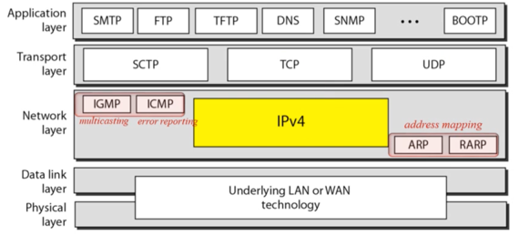
- ARP와 RARP는 Logical address와 Physical address를 매핑하는 Address mapping에 관련된 부분이고
- RARP는 Application layer에 있는 BOOTP라는 놈과 연관이 있댄다
- IGMP는 Multicasting에 관한 부분
- ICMP는 Error Reposting에 관한 부분이다 - 네트워크상에서 Congestion(혼잡현상)이나 어떤 다른 에러가 일어나는지 알려줌
Address mapping - ARP, RARP (+ BOOTP, DHCP)
ARP
- 이미 다 배운내용이니 기억 안나면 이거 확인해라
- Two levels of addressing : 12. Network Layer, Routing
- Address Resolution Protocol : 13. Routing
- ARP cache & format : 부록 - 실습자료 1) Network layer & ARP
- Proxy ARP : 부록 - 실습자료 2) Proxy ARP
- 아래는 생각해봄직한 예시들임
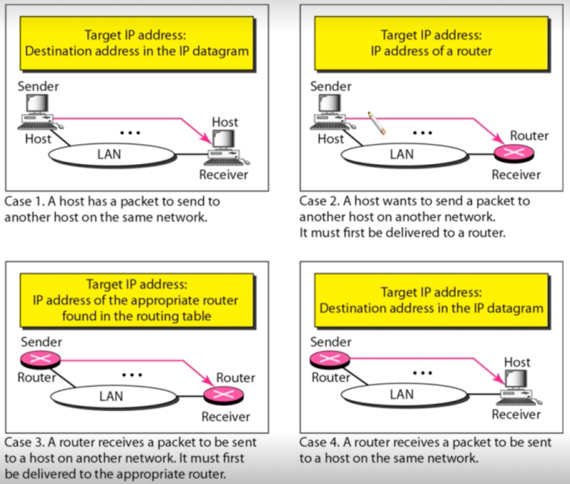
- 위 그림은 뭐 간단맨함 - 시험에 ARP과정 적으라는거 나올거같으니까 함 쭉 읽어보고 각각 케이스가 어떻게 진행되는지 생각해보라
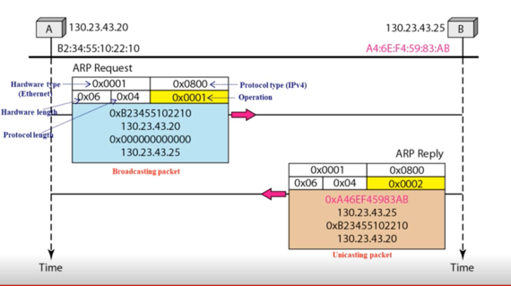
- 예시인데 이 과정도 직접 패킷 구조 그림 그려가며 연습해라
RARP
- 얘는 Reverse ARP로 물리주소(MAC 주소)를 알고있을 때 논리주소(IP 주소)를 알아내는 과정이다
- RARP는 BOOTP와 DHCP로 진화해 현재는 DHCP를 주로 사용하고 RARP는 구식이 됐다
- 물리주소를 가지고 논리주소를 알아내야 되는 상황은 대표적으로 다음과 같다
- Diskless station의 경우
- 얘는 자신한테 하드디스크가 없고 서버에게 원격접속하여 컴퓨팅을 하는 분산시스템이다
- 이때 서버의 물리주소만 알고 얘의 논리주소는 모르기 때문에 알아와야 할 필요가 있는 것
- RARP와 BOOTP가 이러한 상황에 대처하기 위해 만들어졌다
- 또한 현재의 IP는 IP주소의 고갈을 막기 위해 컴퓨터가 켜지면 IP주소를 빌려오고 컴퓨터가 꺼지면 IP주소를 반납하는 이런 대여시스템으로 작동하는데 이때 IP가 매번 달라지기 때문에 자신이 할당받은 논리주소를 자신의 물리주소를 통해 알아오는 과정이 필요하게 된다
- 얘는 DHCP의 등장 배경이 된댄다
작동과정
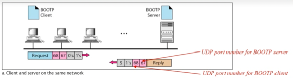
- 위의 예시에는 BOOTP라고 적혀있지만 이 예시가 RARP의 작동과정이랑 동일하댄다
- 작동과정은
- 일단 요청하는놈(Client)와 응답하는놈(Server)가 있다 - Client는 그냥 일반 호스트이고, Server는 해당 서브넷에 추가적으로 설치되어있는 서버임 - Server는 모든 Client의 논리주소와 물리주소 쌍을 알고 있다
- 그래서 Client가 물리주소를 가지고 논리주소를 요청하면 Server가 그에 맞는 논리주소를 응답해주는 아주 단순한 구조이다
- 하지만 이러한 구조를 가지면 모든 서브넷마다 Server를 하나씩 설치해야되므로 아주 비효율적 - 이것을 해결하기 위해 BOOTP가 나왔다
BOOTP
- 뒤에 다시 배운다
- RARP와의 차이점은
- 일단 Server와 Client가 있는 것은 RARP와 동일하다
- 다만 RARP는 해당 서브넷에 Server가 있어야 했지만, BOOTP의 경우에는 다른 곳에 하나만 있어도 된다는 차이점이 있고
- 일단 BOOTP가 위치하는 Layer가 Application layer라는 것과
- UTP를 사용한다는 정도의 차이점이 있다
- 작동과정은
- 같은 서브넷에 Server가 있을 경우에는 그냥 RARP와 동일하다
- 만일 다른 경우에는
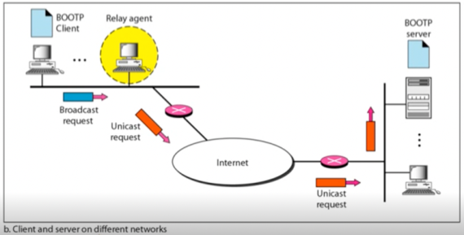
- 위의 그림처럼 서브넷에 Server가 아닌 Relay agent가 하나씩 있게 된다 - 얘는 BOOTP Server의 위치를 알고있는 놈임
- 따라서 Client가 BOOTP Request를 Broadcast로 보내면 Relay agent가 받아서 Unicast로 BOOTP Server에게 보내 응답을 받아와 Client에게 전달해주는 방식으로 진행된다
- 즉, Relay agent는 request를 datagram으로 encapsulate하여 BOOTP Server에게 Unicast하게 요청을 보내게 되고
- BOOTP Server는 encapsulated datagram을 받으면 그것에 대한 응답을 생성해 다시 encapsulate 하여 datagram으로 BOOTP Reply를 보내게 된다
- 마지막으로 Relay agent가 응답을 받으면 BOOTP Client에게 응답을 보내는 방식으로 이루어진다
DHCP
- RARP와 BOOTP의 경우에는 논리주소와 물리주소가 1:1로 매핑되어 있고 바뀌지 않는다는 가정 하에 가능한 프로토콜이다
- 즉, Deterministic binding이 되어있는 것
- Dynamic configuration protocol이 아니다라고도 표현함 - 동적으로 알아낼 수 있는게 아니다 이거야
- 하지만 현재에 사용되고 있는 IP는 논리주소가 네트워크에 접속할때마다 변경되기 때문에 새로운 프로토콜이 필요하게 되는 것이다
- Dynamic Host Configuration Protocol(DHCP) 는 Static Address Allocation과 Dynamic Address Allocation을 모두 지원하는 방법이다
- 우선, Static Address Allocation의 경우에는 BOOTP와 동일하게 작동한다 - 요청을 받으면, DB에서 상응하는 논리주소를 꺼내와 응답하고
- Dynamic Address Allocation의 경우에는 안쓰는 논리주소를 하나 할당해서 응답해주고 임시적으로 값이 저장되는 또 다른 DB에 저장하게 된다
- 결과적으로 다음과 같은 과정이 이루어진다
- Request가 들어오면 일단 Static DB부터 확인한다
- 그리고 Static DB에 있으면 그에 맞는 논리즈소를 응답한다
- 만약 Static DB에 없으면, Available pool(아무도 사용하지 않고 있는 논리주소들의 모음)에서 하나를 꺼내서 응답하고
- Dynamic DB에 추가한다
- BOOTP의 경우에는 DB를 변경하려면 Manually하게(관리자가 직접)해야 하는 단점이 있었지만
- DHCP의 경우에는 Static DB는 여전히 Manually하게 변경해야하지만 Dynamic DB은 Automatic하게 변경되게 된다
Error reporting : ICMP
- 일단 IP에는 Error reporting이랑 Error-correcting에 대한 기능이 없다 - 그래서 ICMP 프로토콜이 추가적으로 필요하게 되는 것
- Internet Control Message Protocol(ICMP) 는 IP패킷들이 지나가는 과정에서 발생할 수 있는 에러에 대해 Error reporting과 Error correcting을 해주며 관리하는 프로토콜이다
- 네트워크상의 자원들을 관리하는 프로토콜은 또 따로 있고 여기서는 IP패킷이 지나가는 과정에서 일어날 수 있는 에러에만 초점 을 맞춘다
- 즉, Network layer에 한정해서 일어날 수 있는 문제들을 관리하는 것
- 얘가 보내는 메세지에는
- Error reporting message : 실제로 IP 패킷이 지나갈때 발생할 수 있는 에러들을 알려줌
- Query message : 이건 자신 옆에 있는 호스트에게 보내는 메세지로 내 옆에 있는 놈이 누구인가? 등을 물어볼 수 있는 기능이랜다
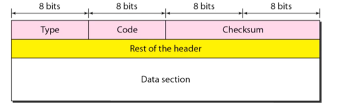
- 뭐 위에 메세지 포맷은 그냥 참고만 해라
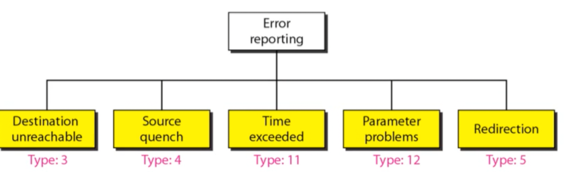
- 이것도 뭐 참고만 해라
IP Multicast : IGMP
- 일단 Multicast라는 것은 특정 다수에게 패킷을 보내는 방법이다
- 뭐 Unicast가 특정 한명이고 Broadcast가 불특정 다수니까
- 이걸 위해서는
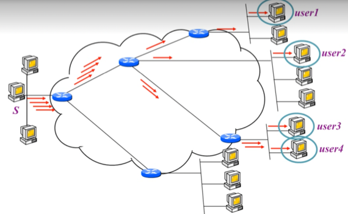
- 첫번째로는 위 그림처럼 메세지를 여러번 보내는 방법이 있다 - Multiple unicast라고 함
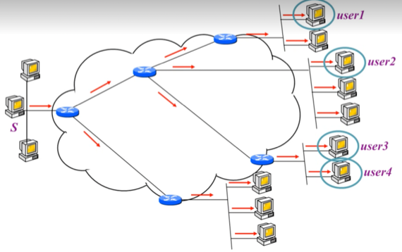
- 그리고 메세지를 Broadcast하게 보내고 각 라우터를 지날때는 모든 Interface에 복사를 해서 보내는 식으로 보든 호스트한테 다 보내되, 수신측에서 필터링하는 방법도 있다
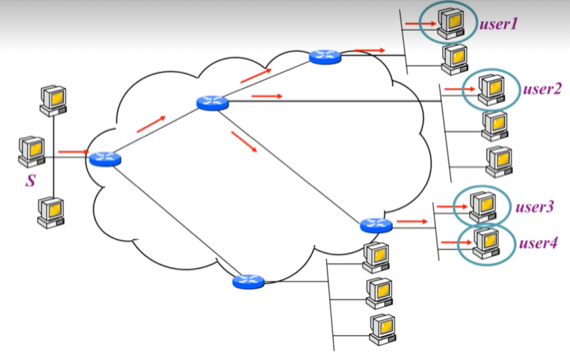
- 하지만 특별한 Multicast strategy를 이용하면 위처럼 원하는애들한테만 골라서 보낼 수 있게 된다
- 이 방법을 고안해야 되는 이유는 다음과 같다
- Multiple unicast의 경우에는 수가 많은 경우 너무 많은 패킷을 보내야 돼 병목현상이 일어날 수 있고
- Broadcast의 경우에는 원치 않은 애한테도 도달은 하게 된다는 문제가 있기 때문이다
- 일단 여기서 알아야 할 것은 Router 간 통신에는 Multicasting Protocol이라는 것을 사용하고
- Router와 Host간 통신에는 **Internet Group Management Protocol(IGMP)**를 사용한다는 것을 알아한다 - 프로토콜이 구분되어 있다는 것
- 이건 왜냐하면 첫번째로는 통신의 특성이 다르기 때문 - Router와 Host의 통신에는 한번 보내면 다 퍼지지만 Router와 Router의 통신은 여러 대상에게 보내기 위해서는 여러번 보내야 하기 때문
- 두번째로는 Router와 Host와는 다르게 Router와 Router의 통신은 Network 사업자의 영역이기 때문에 다른 프로토콜을 사용하게 된다 - 뭐 datagram과 virtual circuit할때 사업자랑 고객이랑 다른 프로토콜을 사용했던 것과 같은 이유
- Multicasting Protocol은 나중에 배운댄다
구조
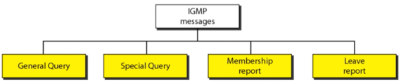
- 뭐 이것도 참고만 하면 된다
- 다만 라우터가 주기적으로 Group에 참여하고 싶은 호스트들을 Query의 형태로 설문받는데
- Membership report는 Group에 참여하고 싶음을 알리는 메세지이고
- Leave report는 Group에서 빠지고 싶음을 알리는 메세지이다
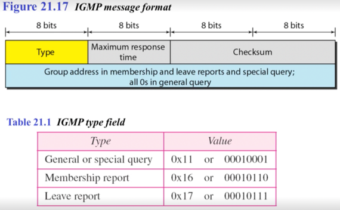
- 얘도 그냥 참고만
IGMP Operation
- 먼저 Group과 Group ID의 개념을 좀 알 필요가 있음
- 예를 들어서 설명하는게 젤 이해 잘되는듯 - Group은 무도를 보는 가구의 집합이고 Group ID는 무도의 채널번호라고 대략적으로 감 잡으면 된다
- 따라서 어떤 가구(호스트)하나가 무도를 보고싶으면 (Group에 속하고 싶으면) 지역 기지국에서 (Router 에서) 보고싶은 채널 설문 조사를 했을 때(General query를 날렸을 때) 설문 응답에 무도를 적어 (Membership report를 하여) 무도를 우리 지역에도 틀어달라고 요청할 수 있다 (Group에 속할 수 있다)
- 그룹에서 빠져나올때는 지역 기지국에(Router에) 연락해(Leave report를 하여) 무도를 그만 틀어달라고 요청할 수 있는 것(Group에서 나올 수 있는 것)
- 그러면 기지국은(Router는) 제공 채널 목록에서 (Group id list에서) 바로 지우는 것이 아니라 다른 가구들의 의견을 물어보고 결정하게 된다(Group id를 포함하여 Special query를 날려 Membership report를 추가적으로 받는다 - 특정 기간동안 기다려도 아무도 Membership report를 하지 않으면 지우지만 누군가가 보내게 되면 지우지 않고 냅두게 되는 것)
- 이 과정은 Monitoring membership이라고 한다
- 그래서 Group ID는 Multicast Address라고도 하는데 이제 라우터한테 해당 **Group ID(Multicast Address)**로 패킷이 도착하면 라우터에 속한 호스트들에게 뿌려주게 되는 것
- 위 과정을 유심히 보면 가구 하나가 무도를 신청했으면 다른 가구는 추가적으로 신청하지 않아도 무도를 틀어서 볼 수 있다 - 즉, 호스트 하나가 라우터에게 Membership report를 날렸으면 Multicast packet이 도착했을 때 라우터가 뿌려주게 될 것이므로 다른 호스트들은 Membership report를 날릴 필요가 없이 그냥 받아 보기만 하면 되는 것 - 추가적으로 Membership report를 할 필요가 없다
- 그리고 Multicast router라는 놈에 대해서도 이해를 해야 한다
- 얘의 역할은 Multicast packet을 뿌려주는 역할을 하는 라우터인데
- 여기서 중요한 것은 Multicast router의 갯수는 네트워크당 여러개가 될 수 있지만 각각 Multicast router에 배정된 group id 리스트는 배타적이어야 된다는 것이다
- 이건 왜냐하면 만일 호스트가 하나의 Multicast router에만 연결되어있으면 걔가 모든 Multicast packet을 처리하면 되지만, 여러개의 Multicast router에 연결되어 있을 때 Group id 리스트가 배타적이지 않다면, 교집합에 해당하는 그것에 대한 Multicast packet은 여러개의 Multicast router에서 호스트로 보내기 때문에 호스트가 여러번 받게 되는것 - 비효율적이더라
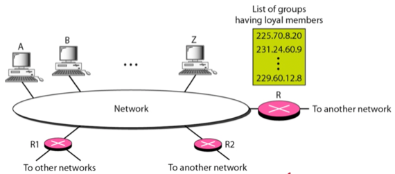
- 그래서 위 그림이 예시임
- A, B, Z는 라우터 R, R1, R2에 연결되어있고 이중에 R이 Multicast router로 역할을 하고 있다
- 그리고 R에는 저렇게 Group ID(Multicast Address) List가 있어서 해당 GID로 Multicast packet이 도착하면 R이 패킷을 뿌려주게 되는 것
Delayed response strategy
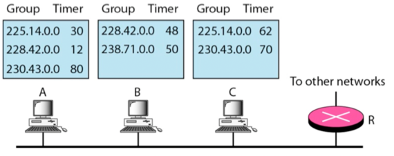
- 위에서 한 얘기를 좀 더 구체적인 과정으로 보여준거긴 한데
- Membership report를 한번만 보낼 수 있도록 하는 알고리즘 인 셈
- R에서 General query를 날린 시점이 0초라고 하자
- 그럼 각각의 호스트는 General query를 받은 시점으로부터 자기가 원하는 GID 각각에 대해 난수를 하나 뽑아서 타이머를 설정해 놓는다
- 위의 그림에서 Timer에 해당하는 숫자가 바로 그것임
- 그리고 타이머가 종료되면 해당 GID에 대해 Membership report를 보내게 되고
- 해당 GID에 대해 Membership report를 보내려고 했던 다른 호스트는 자기보다 먼저 타이머가 종료되어 Membership report를 보낸 놈이 있다는 것을 알고 타이머가 종료되어도 안보내게 된다
- 위의 그림에서는 228.42.0.0에 대한 Membership report는 A가 12초 뒤에 타이머가 끝나므로 보내게 된다
- 그럼 B의 경우에는 48초이므로 아직 36초가 남은 상황이겠제
- 근데 B는 A가 먼저 보낸 것을 알고 228.42.0.0에 대한 Membership report를 타이머가 종료되어도 보내지 않게 된다(보내야 하는 Membership report 목록에서 지우게 됨)
- 마찬가지로 225.14.0.0의 경우에도 A가 먼저 끝나므로 C는 보내지 않고
- 230.43.0.0의 경우에도 C가 먼저 끝나므로 A는 보내지 않는 식
- Membership report 보내지는 순서 뭐 이런거 시험에 나올 수 있을듯 - ppt 50페이지 근처 예제 풀어볼것
- 그리고 Query router라는 놈도 있는데 이놈은 Query를 보내게 되면 다량의 Response를 받게 되므로 Query를 보내는 라우터를 따로 하나 지정하고, 나머지 라우터들은 Response를 처리하는 식으로 역할 분담을 해 병목형상을 막는다